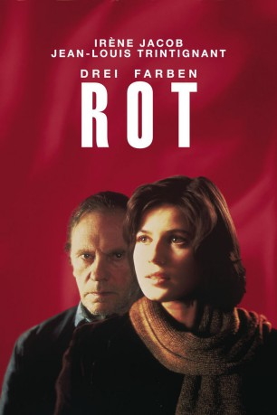

#1474 Drei Farben 3 - Rot
Alternativ: Three Colors: Red (Englischer Titel)
Auszeichnungen: für 3 Oscars nominiert
 
 IMDB-Wertung: 8.1 / 10
IMDB-Wertung: 8.1 / 10  IMDB-TOP-Platzierung: 247
IMDB-TOP-Platzierung: 247  Metascore: 100
Metascore: 100 
Nach Drei Farben: Blau ("Freiheit") und Drei Farben: Weiss ("Gleichheit") steht Drei Farben: Rot als letzter Teil der "Trikolore-Trilogie" von Krzysztof Kieślowski im Zeichen der "Brüderlichkeit". Meisterhaft erzählt der Regisseur die sonderbare, von Zufällen gelenkte Geschichte. Mit diesem Abschluss-Film inszenierte Kieślowski sein packendstes Werk.
Jahr: 1994
Dauer: 99 Minuten
FSK: 6
Land: Frankreich Studio: Concorde Home EntertainmentTonspuren:
Untertitel:
Auflösung: 1080p (1920x1040) Größe: 8949 MB
Genre: Drama, Mystery, Liebe
Regisseur:  Krzysztof Kieslowski
Krzysztof Kieslowski
Drehbuch: Krzysztof Kieslowski, Krzysztof Piesiewicz
Soundtrack: Zbigniew Preisner
Darsteller:
- Irène Jacob als Valentine
 Jean-Louis Trintignant als Le juge
Jean-Louis Trintignant als Le juge- Frédérique Feder als Karin
 Samuel Le Bihan als Le photographe, Photographer
Samuel Le Bihan als Le photographe, Photographer Juliette Binoche als Julie Vignon, de Courcy
Juliette Binoche als Julie Vignon, de Courcy Julie Delpy als Dominique
Julie Delpy als Dominique Zbigniew Zamachowski als Karol Karol
Zbigniew Zamachowski als Karol Karol Jean-Pierre Lorit als Auguste
Jean-Pierre Lorit als Auguste- Marion Stalens als Le Vétérinaire, Veterinary surgeon
- Teco Celio als Le barman, Barman
- Bernard Escalon als Le disquaire, Record dealer
- Jean Schlegel als Le voisin, Neighbour
- Elzbieta Jasinska als La femme, Woman
- Paul Vermeulen als L'ami de Karin, Karen's friend
- Jean-Marie Daunas als Le gardien du théâtre, Theatre manager
- Roland Carey als Le trafiquant, Drug dealer
- Brigitte Raul als
- Leo Ramseyer als
- Nader Farman als
- Cécile Tanner als
- Anne Theurillat als
- Neige Dolsky als
- Jessica Korinek als
- Marc Autheman als
- Benoît Régent als Olivier
Datei: X:\3-Trilogie(A-F)\Drei Farben\Drei Farben 3 - Rot (1994, FSK6, 1920x1040).mkv seit 09.07.2015
Festplatte: HD Collection-2(A-Z)-3(A-M)
 Alle Filme aus Gruppe '3-Trilogie(A-F)\Drei Farben'
Alle Filme aus Gruppe '3-Trilogie(A-F)\Drei Farben'